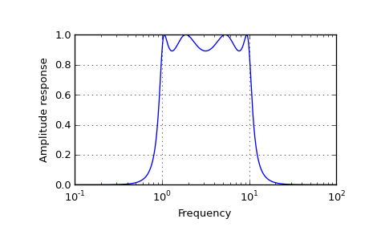

scipy.signal.freqs¶
- scipy.signal.freqs(b, a, worN=None, plot=None)[source]¶
Compute frequency response of analog filter.
Given the numerator b and denominator a of a filter, compute its frequency response:
b[0]*(jw)**(nb-1) + b[1]*(jw)**(nb-2) + ... + b[nb-1] H(w) = ------------------------------------------------------- a[0]*(jw)**(na-1) + a[1]*(jw)**(na-2) + ... + a[na-1]Parameters : b : ndarray
Numerator of a linear filter.
a : ndarray
Denominator of a linear filter.
worN : {None, int}, optional
If None, then compute at 200 frequencies around the interesting parts of the response curve (determined by pole-zero locations). If a single integer, then compute at that many frequencies. Otherwise, compute the response at the angular frequencies (e.g. rad/s) given in worN.
plot : callable
A callable that takes two arguments. If given, the return parameters w and h are passed to plot. Useful for plotting the frequency response inside freqs.
Returns : w : ndarray
The angular frequencies at which h was computed.
h : ndarray
The frequency response.
See also
- freqz
- Compute the frequency response of a digital filter.
Notes
Using Matplotlib’s “plot” function as the callable for plot produces unexpected results, this plots the real part of the complex transfer function, not the magnitude.
Examples
>>> from scipy.signal import freqs, iirfilter
>>> b, a = iirfilter(4, [1, 10], 1, 60, analog=True, ftype='cheby1')
>>> w, h = freqs(b, a, worN=np.logspace(-1, 2, 1000))
>>> import matplotlib.pyplot as plt >>> plt.semilogx(w, abs(h)) >>> plt.xlabel('Frequency') >>> plt.ylabel('Amplitude response') >>> plt.grid() >>> plt.show()
